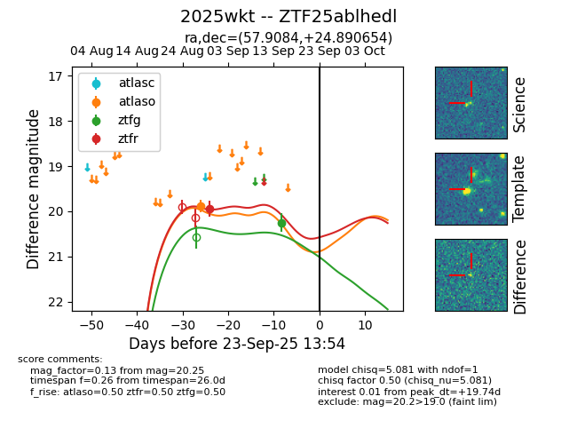
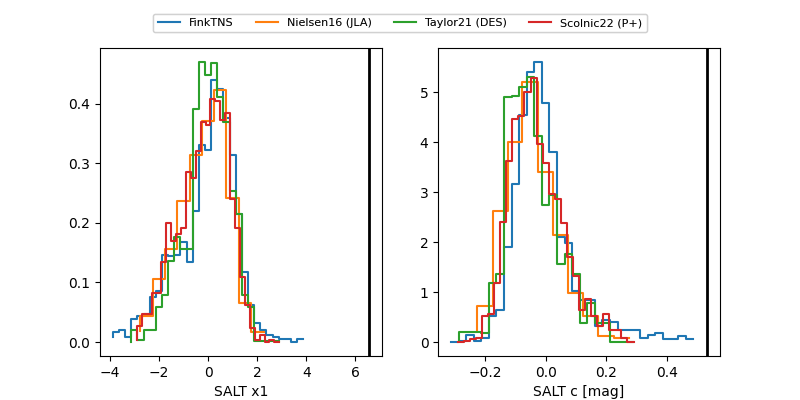

FINK: ZTF25ablhedl
Lasair: ZTF25ablhedl
ALeRCE: ZTF25ablhedl
TNS: 2025wkt
YSE: 2025wkt
ZTF25ablhedl (ztf,fink)
2025wkt (tns,yse)
equatorial (ra, dec) = (57.9084,+24.89065)
galactic (l, b) = (166.8446,-22.23802)


last atlaso=19.88, ztfg=20.25, ztfr=19.95
1 atlaso, 1 ztfg, 1 ztfr detections